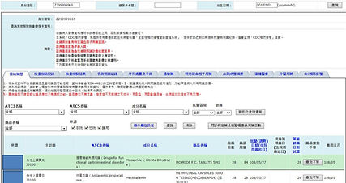

Bridging the Healthcare Information Gap: Taiwan’s National PharmaCloud

TYPE
Evaluative Research / Strategic Redesign
CLIENT
National Health Insurance Administration (NHI), Taiwan
TEAM
3 UX Researchers, 2 Product Designers
Overview
Taiwan’s world-class National Health Insurance system provides affordable and accessible healthcare. However, this accessibility leads to high patient volumes and extremely short clinical windows. Clinicians urgently needed a real-time, reliable system to verify patient medication history, ensure drug safety, and eliminate duplicate prescriptions.
Despite having an existing system, the NHI PharmaCloud suffered from a fragmented interface and unintuitive user flows. These inefficiencies directly limited the ability of doctors and pharmacists to provide accurate care under pressure.
As the Lead UX Researcher, I directed a mixed-methods initiative to redesign the system’s experience. My goal was to transform a complex data repository into a streamlined clinical tool that enhances decision-making and patient safety. The final redesign achieved a 26% increase in usability and a System Usability Scale (SUS) score of 84.5.
Methodology
To bridge the gap between technical complexity and clinical reality, I implemented a rigorous multi-stage research framework. This included field observations in high-traffic clinics, stakeholder deep-dives, and expert heuristic evaluations to identify the friction points in the existing workflow.

💡 Immersive Field Research
We conducted extensive on-site observations at clinics and hospitals to understand the high-pressure environment where the system is actually used. By studying the NHI system’s manual and historical logs, we decoded the professional medical knowledge required to navigate the platform. This data allowed us to construct a comprehensive User Journey Map that highlighted the critical pain points for both doctors and pharmacists.

Analyzing the physical setup: card readers and monitor placement in active clinical environments.

Clinical sessions in Taiwan often last less than 5 minutes, making information retrieval speed critical.

💡 Heuristic & Usability Evaluation
We collaborated with three design experts to perform a structured heuristic evaluation, identifying 93 unique usability issues. These were prioritized into categories of severity, revealing that over 45% of problems stemmed from inconsistent standards and poor information hierarchy.
Following this, I led usability testing and card sorting sessions with 20 healthcare professionals. These sessions provided the quantitative and qualitative data needed to reorganize 11 critical information categories—ranging from Western and Chinese medicine records to laboratory results and surgical data—into a logical, clinician-centric structure.

Engaging design faculty and experts to identify structural system flaws.

Iterative usability testing with active doctors and pharmacists.
Synthesis: Usability & Card Sorting Data


We benchmarked success rates across core information retrieval tasks, identifying specific data types that required higher visibility.
Restructured Information Architecture

💡 Strategic Insights
Addressing Information Asymmetry
Our research revealed a significant breakdown in clinician-patient communication. Critical progress updates were often conveyed verbally using jargon, leading to patient confusion. With clinical sessions limited to roughly five minutes, the redesigned system needed to serve as a shared visual reference point to improve patient understanding and trust.

Presenting findings to the Ministry of Health and Welfare to secure investment for the overhaul.
💡 Evolution of the Design
Legacy Interface: The Navigation Burden


The legacy system was characterized by incomprehensible information hierarchy and confusing visual cues.
The Redesign: Clean, Clinical, and Decisive

💡 Outcomes & Scale
The redesign transformed the NHI PharmaCloud into a highly efficient clinical asset. By securing a SUS score of 84.5 and demonstrating a 26% gain in overall usability, our research pivoted the government’s strategy. They invested in a complete system overhaul, resulting in a seamless cross-platform experience that continues to support healthcare professionals across Taiwan today.